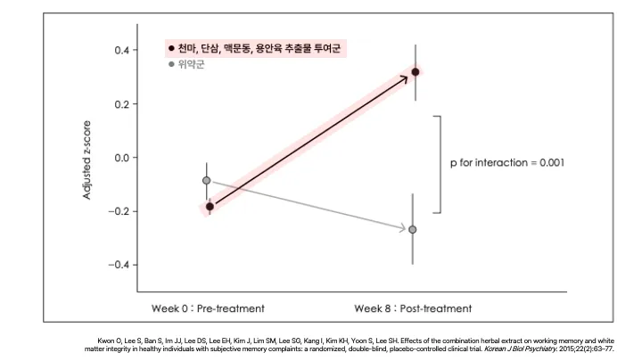

총명공진단 세션 교육자료
더 오래, 더 건강하게. 수壽 브랜드의 세계관이 넓어집니다.
수壽 브랜드 세계관이 넓어집니다.
수험생부터 노인까지
전연령의 인지기능 개선을 타겟합니다.
더 오래, 더 건강하게
수壽의 브랜드 가치와도 부합합니다.
기억력에 어떤 문제가 있다고 느낀 적이 있습니까?
예를 들어, 약속이나 이름을 잊거나, 길을 잃거나, 물건을 잘못 두는 등
치매진단을 받지 않았다고 하더라도,
주관적인 인지 기능 저하 SCD는, 곧 기대수명 감소입니다.*
1. 평가 질문: 참가자에게 다음과 같은 질문을 던졌습니다:
“Do you have recognized any problems with your memory? That includes, for example, forgetting appointments or names, getting lost or misplacing things.”
(“기억력에 어떤 문제가 있다고 느낀 적이 있습니까? 예를 들어, 약속이나 이름을 잊거나, 길을 잃거나, 물건을 잘못 두는 등의 경험이 포함됩니다.”)2. SCD(Subjective Cognitive Decline, 주관적 인지 저하)군으로 분류된 조건:
- SCD 있음 : 위 질문에 대해 “문제가 자주 또는 항상 있다”고 응답한 경우
- SCD 없음 : “거의 없거나 전혀 없다”고 응답한 경우
- 이 평가는 인지검사(MMSE 등)를 시행하기 전에 사전적으로 수행되었으며, 치매 진단을 받지 않은 고령자(75세 이상) 중 SCD가 있는지 여부를 분류하는 데 사용되었습니다.
수험생에게 총명공진단이 필수입니다.

수능 성적이 오를 수 있다면,
시험 집중력이 높아진다면,
솔깃한 세상
문제인 것을 알면서,
요행만 늡니다.
**ADHD의 폭발적 검색량
총명탕의 모호한 검색량**
**불안감이 커지니
ADHD가 아니지만, ADHD 약을 찾습니다.**

이미 검증된 한약
작업기억 향상?
수험생활에 총명공진단이 정답입니다.
| 총명탕(聰明湯) |
|---|
| 治多忘, 잘 잊는 증상을 치료하며, |
| 久服能日誦千言, 오랫동안 복용하면 하루에 천 마디의 말을 외울 수 있게 된다. |
| 白茯神遠志以甘草水泡去骨薑汁製石菖蒲各等分右剉每三錢水煎服或, 爲末每二錢茶湯點服日三. 백복신과 원지는 감초 달인 물에 담가 심(骨)을 제거하고, 생강즙으로 법제하며, 석창포와 함께 각각 같은 분량으로 쓴다. 위 약재들을 썰어서 한 번에 3돈(약 11.25g)을 물에 달여 복용하거나, 또는 가루로 만들어 한 번에 2돈(약 7.5g)을 찻물에 타서 하루 세 번 복용한다. |
| <東醫寶鑑, 種杏> |
8월 5일, 수능 100일
수험생에게 총명공진단을 처방하세요.
수능에 한의원을 찾도록,
한의사 동료분들과 함께
수능 총명공진단 운동을 시작합니다.
이번 이벤트를 시작으로,
포스터, X배너 전부 준비했습니다.
**청소년뿐 아니라 직장인, 사업가, 노년층
집중력, 기억력이 필요한 모두에게**
**집중력, 기억력 개선
뇌 신경세포 보호**
**총명공진단.
처방하세요.
3박자를 오늘 다 익히고 나갑니다.**
지식에 대한 장악력
확신으로 권하는 기세
명료한 타겟 목표
(연사자 : 이두석 연구소장님)
**학습 능력 향상의 핵심은
“작업기억”에 있습니다.**
작업기억은 특정 정보를 일시적으로 기억하여, 정보를 이용하여 특정 작업을 주의 깊게 수행하는 기억력입니다.
청각, 시각적 정보를 잠깐 저장하면서 동시에 판단, 추론, 연산 등을 하는 능력입니다.
간단하게는 전화 걸기 전까지 전화번호 외우기 같은 것을 예로 들 수 있습니다.
작업기억은 학습능력과 학업 성취도를 결정합니다.
- 고등 뇌 영역인 연산 전전두엽 피질(PFC)에서 담당
- 능력, 문해력과 상관 → 작업기억 높으면 수학 점수, 제 2외국어 점수 높다.
- 집중력/주의력과 상관 → 작업기억 높으면 주의가 산만해지지 않는다.
- 학업성적을 예측할 수 있는 능력 → IQ 보다 학업성취도와 상관 높다.
노화, 스트레스, 불안감에 의해 쉽게 영향 받는 능력입니다.
20대까지 발달하고, 30대 이후 꺾입니다.
지금 보고 계신 분들은 모두 작업기억의 감퇴를 경험 중이실 것입니다.
출처: https://www.nacd.org/short-term-and-working-memory-clinical-insights/
구성
수험생활, 장기 학습으로 인한 피로, 인지 기능 개선, 뇌 기능 활성화 맞춤 처방입니다.
| 총명탕 | 원지, 석창포, 복령 | 뇌 기능 활성화, 기억력 강화, 집중력 향상, 인지 능력 보강, 심신 안정 |
| 녹용공진단 | 목향, 녹용, 당귀, 산수유, 꿀 | 간 기능 개선, 피로회복, 기억력/눈 기능 개선 |
| 천마, 단삼, 맥문동, 용안육 | 작업기억 개선 효과, 뇌 활성화, 집중력 개선 |
효능
총명탕
흐려진 기억이 뚜렷해집니다.
스코폴라민 유도 기억장애 흰쥐에 경구 투여시, 흐려진 기억이 뚜렷하게 회복된 연구가 있습니다.
실험방법
1. 밝은 칸에 있던 쥐가 어두운 칸으로 들어가는 순간, 문을 닫고 전기 충격을 가합니다. 이 과정을 통해 ‘어두운 칸에 어가면 전기 충격을 받는다.’는 사실을 쥐가 학습하게 만듭니다.
2. 24시간 후, 학습 단계와 동일한 절차를 반복합니다.
3. 그리고 다시 밝은 칸에 놓은 쥐가, 어두운 칸에 들어가는데 걸리는 시간(step-through latency)를 측정하여, 기억력, 학습력을 평가합니다.
학습 능력과 기억력이 향상됩니다.
학습 및 기억과 관련된 신경전달물질(아세틸콜린, ACh)을
분해해버리는 효소(AChE)는 억제하고,
합성하는 효소(ChAT)를 증가시켜 학습 능력, 기억력을 강화합니다.
공진단
학습, 업무 필수 요소인 지구력을 증가시킵니다.
학습, 업무의 방해 요소인 피로는 개선됩니다.
공부, 업무, 체력에 방해되는 요소를 제거합니다.
학습, 업무에 방해되는 안구건조가 개선되고,
피로가 심해질 수 있는 빈혈을 막고, 간을 보호합니다.
천마, 단삼, 맥문동, 용안육
작업기억을 개선하고,
기질적으로 뇌의 연결을 강화합니다.
단순히 뇌의 기능 개선이 아닙니다.
8주간 천마, 단삼, 맥문동, 용안육 추출물 복용 후
작업 기억 수행 능력이 통계적으로 유의미하게 향상되었으며,

뇌의 연결성이 증가된 것을 DTI(diffusion tensor image) 분석으로 확인했습니다.
ADHD 아동은 심각한 작업기억 저하가 관찰됩니다.
작업기억은 학업 능력 뿐만 아니라 업무 능력 처리에 매우 중요합니다.
ADHD 아동은 이 부분에 있어서 매우 큰 어려움이 있습니다.
ADHD 아동의 주의력 저하, 과잉행동을 개선할 수 있습니다.
ADHD약(메틸페니데이트, 예:콘서타정)을 복용 중이라면, 총명공진단을 복용하면 더 증상이 개선될 수 있습니다.
한약복합추출물(천마, 맥문동, 단삼, 용안육) 병용 시, ADHD 평가 척도 총점, 부주의 지표가 모두 통계적으로 유의미하게 개선되었습니다. 또한 과잉행동은 감소하는 경향성이 함께 확인되었습니다.
무작위배정, 이중맹검, 위약 대조 임상시험
1. 연구 기간: 4주
2. 연구 방법
- 실험군 (n = 13): 메틸페니데이트 + 한방복합추출물(천마, 맥문동, 단삼, 용안육)
- 대조군 (n = 14): 메틸페니데이트 + 위약
3. 평가 지표
- K-ARS (Korean version of the ADHD Rating Scale, ADHD 평가 척도)
ADHD 아동에게 감소되어있는 뇌 부위와 기능이 활성화됩니다.
ADHD 아동 중 한약추출물을 복용군에서
주의조절, 기억력을 담당하는 부위인 precuneus와 Middle Temporal Gyrus 간의 연결성이 증가했습니다.
1. Precuneus (두정엽 피질 뒤쪽 부위) : 주의 조절, 자기 성찰, 시공간 정보 처리에 관여
ADHD에서는 precuneus 기능 저하 또는 비정상 연결이 자주 보고됨
2. Middle Temporal Gyrus (중측두회) : 언어 처리, 기억력, 주의 전환에 관여
ADHD 아동은 이 부위의 기능 연결이 약화되어 있는 경우가 많음
알츠하이머 치매 유발 물질에 의해 저하된 뇌 기억력을 살려냈습니다.
알츠하이머 치매 유발 물질을 투여하여 기억 장애가 유발된 쥐에게
한약(천마, 용안육, 단삼, 맥문동) 추출물을 경구투여했을 때
작업기억 및 장기기억이 현저히 회복되는 양상이 확인되었습니다.

신경전달물질 분해 효소를 억제하고 기억 손상을 회복하는 측면에서
대표적인 기존 치매 치료제(Donepezil)와 유사한 기전이 확인되어 보완 치료제 가능성도 함께 확인되었습니다.
처방 가이드라인
📌 누구에게 처방하나요?
- 집중력, 기억력이 떨어져 장기간 학습하기가 힘든 분
- 단어, 이름이나 방금 들은 내용을 쉽게 잊는 분
- 두뇌 활동이 예전 같지 않다고 느끼는 중,장년층
- 기억력 증진에 도움이 필요한 분
- 치매는 아니지만, 기억력 저하로 치매가 우려되는 분
- 시험 또는 면접 등 공부를 3개월 이상 장기간으로 준비해야하는 분
- 문해력이 떨어지거나, 수학연산(산수) 능력이 떨어지는 분
필요한 분들께는 적극 권장하고, 처방하세요.
📌 어떻게 처방하나요?
복용량은 가이드라인을 참고하시되, 환자의 소화 상태를 포함한 전체적인 신체 기능, 컨디션 등을 진료로 확인하신 뒤, 진료의의 의학적 소견에 따라 처방하시길 권장드립니다.
성인 복용 권장량 : 1일 1~2포 (만 나이 기준, 성인 복용량=1)
- 14세 이상 : 1 (1일 1~2포)
- 10~14세 : 3/4 (1일 0.75~1.5포)
- 7~9세 : 2/3 (1일 0.6~1.3포)
- 4~6세 : 1/2 (1일 0.5~1포)
- 2~3세 : 1/3 (1일 0.3~0.6포)
- 🚨 1세 이하 : 1/4, 1개월 미만 : 1/6
- 🚨주의 : 1세 이하 영아의 장은 성인과 달리 쉽게 혐기성 환경이 조성되어 꿀 내에 있는 혐기성 균인 보툴리스균의 포자가 증식할 수 있고, 이 균이 분비하는 보툴리눔 독소에 노출 될 수 있기 때문에 처방에 각별한 주의가 필요합니다.
출처 : 충청남도한의사회 http://chakom.org/bbs/board.php?bo_table=know&wr_id=97
처방 Tip
처방기준이 명확해야 정확한 타겟에게 권할 수 있습니다.
조금 더 구체적으로,
공진단 vs 총명공진단
누구에게, 어떤걸 처방하면 될까요?
📌 한 줄 요약
- 공진단 > 체력 개선, 스트레스 완화 > 자연스러운 신체 컨디션 상승 > 기억력 상승 (부)
- 총명공진단 > 뇌의 효소 활성화 및 작업 기억 능력 개선을 직접 타겟 > 기억력 상승 (주)
그런데, 60대 이상은 다 기억력이 떨어지지않나요? 🤔
- 심한 피로, 근감소, 컨디션 저하가 메인이라면 > 공진단
- 건망증, 작업기억 저하, “돌아서면 잊어요”, 일상생활에서 자꾸 실수한다면 > 총명공진단
**작업기억 테스트 오늘 해보시고,
총명공진단 복용 후, 다시 해보세요.**
짧은 시간, 몇 자리 숫자까지 기억하는지 확인하는 테스트입니다. (digit-span test)
작업기억 평균은 ‘7자리’입니다. (예시 : 전화번호 000-0000)
숫자 7자리 이상 기억하기가 어렵다면, 총명공진단을 복용하셔야 합니다.
복용 후 달라지는 기억력을 직접 확인하세요.
(연사 : 정희범 대표)
총명탕?
**한의사에게 유명하지만,
인지도가 높은 처방이 아닙니다.**
우리는 총명탕을 알지만?
아직은 고객이 먼저 찾지 않습니다.
ADHD약?
환자들이 줄서서 대기합니다.
우리는 아무런 대안, 대체품을 제공하고 있지 않습니다.
“심평원 자료에 따르면, 콘서타 처방 건수는 2019년도 36만여 건에서 2023년 120만여 건으로 폭증했다.”
“처방 환자 수는 2019년 13만3,813명에서 올해 33만7,595명으로 5년 만에 두 배 이상 증가”
“이러한 현상은 우리나라에만 국한되지 않고 세계적으로도 공통된 흐름이라는 게 식약처의 설명”
“한국얀센은 식약처에 지난해 4월과 7월, 올해 2월까지 콘서타 공급 부족을 3차례 보고하기도 했다.”
“콘서타의 장기 품절 원인은 공부 잘하는 약, 집중력 약 등으로 유명세를 타면서 수요가 급증했기 때문인 것으로 보고 있다.”
“대형 종합병원 중심으로 처방이 나오던 약이 일반 의원에서까지 처방이 나오면서 지역 약국들의 주문이 늘었다”
“업계에 따르면 대형 병원 중심으로 처방이 되던 콘서타가 몇 년 사이 개원가에서도 처방이 되면서 수요가 크게 증가했다. 최근 서울 강남 등을 중심으로 콘서타 처방이 집중되고 있는 것도 이와 맥락을 같이 한다.”
ADHD, 집중력 저하에 대한 관심?
공진단과 맞먹습니다.
관심은 확실한데, 우리의 처방이 불확실합니다.
총명공진단 수壽로
이 시장에 진입합니다.
문방사우를 모티브로 한
고급스러운 패키지
문방사우를 담는 '연상'과 왕조 역사를 보관하는 '실록'
현대적으로 해석했습니다.
환자에게 권할 수 있는, 익숙한 이름 ‘총명'을 더했습니다.

**항상 권함에 망설임이 없도록
디자인에 최선을 다했습니다.**
원장님들의 요청은 거의 일관됩니다.
“맛있고, 디자인이 고급스러운, 달콤한 연조엑스제로 만들어주세요.”
- 학생층의 경우 탕제 및 환제에 있어서 복용의 거부감이 있을 수 있어 경옥고 제형과 비슷한 연조엑스제제가 유효할 것으로 생각됩니다.
- 저희의 경우엔 학생들이 연조엑스 타입을 가장 잘 먹더라구요. 환은 이에 껴서 불편하고 탕제는 냄새 때문에 힘들어 하구요.
- 연조엑스도 써서 못먹겠다는 환자가 많습니다. 애들약처럼 달콤한 맛이 나도록 만들어주세요
- 맛이 무조건 맛있어야 할거같습니다!
- 맛이 부드럽고, 디자인이 깔끔하여, 어린 학생들이 휴대하기에 민망하지 않게 디자인 하는 것이 좋을 것 같습니다.
- 고급화 전략이 필요합니다.
먹기 편한 연조엑스제로
학생들도 충분히 맛있게 복용할 수 있습니다.
청소년도 먹기 좋은 당도 38brix로 달콤한 맛이 나는 한약입니다.
한약을 못 먹는 팀원도, 힘들지 않게 복용한 총명공진단.
콜라의 당도가 11brix 정도입니다.
잘되기 위한 법칙
첫번째 법칙 : 먹자
**최소 한 세트는 경험해보세요
첫 복용 사례를 만드세요.**
본인이 확신하는 만큼, 권유할 수 있습니다.
“한 포만 복용했는데도, 달라진 수면의 질, 집중력이 체감된다”
한 포 복용하고, 수면의 질과 수면 지속 시간이 모두 좋아졌다는 원장님의 사례.
측정 어플은 stresswatch 라는 유료 어플로, 아쉽게도, iOS만 제공합니다.
수면 중 깨어있는 시간
: 27분에서 7분으로 줄었습니다.
깊은 잠 + REM 수면 시간
: 1시간 48분에서 2시간 55분으로 증가했습니다.
앞으로도 많은 사례 공유 부탁드립니다.
최근 지속적으로 지표 사례가 늘어나고 있습니다.
한의계 최고 총명탕을 향하여
총명공진단 수壽
두번째 법칙 : 외우자
녹용공진단 상위호환
녹용 등 주요약재 함량이 총명공진단 170%
| 녹용공진단 10환 set (4.5g*10환) |
총명공진단 30포 set (15g*30포) |
녹용공진단 10환 대비 총명공진단 30포 함유량 |
|
|---|---|---|---|
| 녹용 | 7.1g (1환당 0.71g) | 12g (1포당 0.4g) | 170% |
| 일당귀 | 7.1g (1환당 0.71g) | 12g (1포당 0.4g) | 170% |
| 산수유 | 7.1g (1환당 0.71g) | 12g (1포당 0.4g) | 170% |
| 목향 | 2.1g (1환당 0.21g) | 4g (1포당 0.1g) | 190% |
| 환자 처방가 (정가) | 185,000원 | 220,000원 | 환자 결제 금액 118% +35,000원 |
| 한의원 공급가 (정가) | 53,000원 | 77,000원 | |
| 한의원 마진 (정가) | 132,000원 | 143,000원 | 세트당 한의원 마진 +11,000원 |
위 비교는 10환 vs 30포를 비교한 것입니다.
- 1환 vs 1포 비교할 경우, 녹용공진단의 약재 함량(g)이 더 높습니다. (0.71 vs 0.4)
- 1환 vs 2포 (1일 성인 권장 복용량) 비교할 경우, 총명공진단의 약재 함량(g)이 더 높습니다. (0.71 vs 0.8)
3가지 약의 효능 외우세요
녹용공진단의 피로회복 효과
총명탕의 주의집중력 향상 효과
천마, 단삼, 맥문동, 용안육의 작업기억 개선 효과
구성약재 : 원지, 석창포, 백복령, 녹용, 일당귀, 산수유, 목향, 꿀, 천마, 단삼, 맥문동, 용안육
세번째 법칙 : 배치하자, 붙이자
디스플레이 배치하세요.
언제가는 기억이 나도록
꼭 올해 수능이 아니더라도, 이번 공채시험이 아니더라도,
다음 시험 때도 총명공진단이 떠오르도록 합니다.
사진 속 아크릴 스탠드는 미판매 상품입니다. 유사 상품 링크 공유드립니다.
단순하게 일자로 나열하기보다는, 입체감 있는 연출을 해주는 것이 좋습니다.
디스플레이 원칙
1. 패키지 안의 내용물을 반드시 노출시켜주세요.
2. 스틱포는 필수로 꺼내서 보이게 두세요.
3. 입체적인 진열을 위해 아크릴 스탠드를 활용하셔도 좋습니다.
한의원 디스플레이 꿀팁에 대해 궁금하신 분은, 📌 수 멤버스 자료실을 통해 더 많은 내용을 확인하실 수 있습니다.
8월, 수능을 위해 부스터가 필요한 시간!
수능 100일 이벤트 홍보물도 준비했습니다.
포스터, X배너 전부 준비했습니다.
**총명공진단 처방, 홍보물 무료 다운로드와 구매는 수 멤버스만 가능합니다.
아직 수 멤버스가 아니시라면?**
네번째 법칙 : 쏘자
총명공진단 권하는 법
**공부, 나이, 성별 제한 없는
총명공진단 권하기**
입시﹒수능﹒스펙쌓기 1020
공무원﹒자격증 준비, 과도한 업무 2030
업무능력 저하가 느껴지고, 자꾸 까먹는 4050
기억이 흐릿하고, 치매가 걱정되는 6070
권하세요.
수험생
“전화번호 외우기 아시죠? 작업 기억력 좋아져요. 피로 좋아지고요. 드세요.”
“수능 100일 동안 드세요.”
“최소 2달 복용이에요. 60일 120포요.”
“6월 모의고사 보고 먹기 시작하는 경우가 많죠”
“수험생이면 챙겨먹죠”
“재수, 삼수는 체력 싸움이죠. 최선의 방법을 다할 필요가 있습니다. 드세요”
“맛 괜찮고, 연조엑스제로 되어있어서 먹기 편해요.”
ADHD, 집중력 저하 학생
“ADHD약에 함께 복용하면 부주의가 개선돼요. 총명공진단 함께 드세요. ADHD 평가 점수도 좋아져요”
“주의집중력 하락은 총명공진단이에요. 2달 드세요.”
“ADHD 아동은 심각한 작업기억 저하가 특징이에요. 총명공진단은 작업기억 좋게 하고요. 어른으로 치면 업무 능력 처리능력이에요. 드세요.”
“주의집중력 저하는 총명공진단 필수에요.”
성인 - 회사원, 공시생, 취준생
“자꾸 까먹는다 그러면 총명탕이죠. 피로에도 좋아요.”
“몇 달, 몇 개월, 몇 년 장기전이면 총명공진단이랑 같이가야죠. 드세요. 좋아요.”
“체력, 기억력 총명공진단이죠. 하루 2포 하시면 됩니다. 드세요.”
“작업기억 아세요? 전화번호 외우기 하다가, 실제로 전화번호를 눌러서 전화를 바로 걸 수 있는가. 이 능력인데요. 이게 바로 업무 능력에 직결되는 능력이거든요. 총명공진단이 이 능력을 끌어올려줍니다.”
(학습 중인) 시니어
“깜빡하시는게 있다면, 미리 챙기세요.”
“연령 높아질수록, 주관적으로 ‘어 내가 기억력이 떨어졌나?’ 이게 인지 기능 저하되는 신호거든요. 수명하고도 이어지기 때문에, 총명공진단을 먹는게 도움되죠”
“기억력, 피로, 총명공진단이 답이죠.”
“치매 약을 먹는게 답은 아니죠. 미리 인지 기능이 특정선까지 떨어지지 않게 하는게 답이죠. 미리 챙길때는 총명공진단입니다.”
직접 복용하세요.
원장이 경험으로 알아야, 환자에게 적극 권할 수 있습니다.
- 총 8주를 지속 복용합니다.
- 복용 전 집중력, 작업기억 테스트를 해서, 기록으로 남깁니다.
- 몇 자리 숫자까지 외울 수 있는지, 어플을 이용합니다. (digit-span test)
- 7자리 이상 암기가 어려우면, 꼭 총명공진단을 챙겨드세요.
- 복용해봤을 때 맛은 어떤지, 입에 남는 맛이 있는지, 질감이 어떤지 체크합니다.
- 좋은 표현이 있다면 직접 인용합니다.
- “저희 직원선생님은 다크초콜릿 같은 느낌이 든다고 하더라구요.”
- 복용 시점으로부터 달라지는 느낌이 있다면, 시기를 기억합니다.
- 검사기기가 있으면 추가로 활용하세요.
- 집중력 지표가 있는 의료기기(예: 옴니핏)라면 측정해봅니다.
- 옴니핏이 궁금하시다면? 👉옴니핏 무료 방문데모 신청하세요!
- 수면 어플도 사용해봅니다.
- 집중력 지표가 있는 의료기기(예: 옴니핏)라면 측정해봅니다.
- 복용 후기 중 좋은 후기는 꼼꼼하게 모읍니다.
- 원내 바인더, 혹은 복용 후기가 있는 공간에 함께 나열합니다.
- 전후 차이가 나타나는 검사 기록이나, 어플 기록 반드시 함께 후기로 남깁니다.
총명공진단 광고문구는 수멤버스 Pro 게시판에서 확인하실 수 있습니다
**체력, 기억력, 집중력
딸리시는 분들
꼭 직접 복용하세요.**
FAQ
- 총명공진단 처방가가 어떻게 되나요?
- 처방가 : 220,000원
권장량 복용 및 처방가 유지를 위해 30환 패키지로 처방하실 것을 권장드립니다. - 환자 처방 시, 벌크로 처방하는 것은 권장드리지 않습니다.
부득이한 상황으로 벌크 처방 시, 1포당 가격 7,400원을 준수해주세요.
- 처방가 : 220,000원
- 처방가 변경해도 되나요?
- 수 브랜드 가치를 유지하기 위해, 권장 처방가를 반드시 지켜주시길 요청드립니다.
- 이벤트 기간은 언제까지 진행하나요?
- 원장님 공급가 할인 기간 : 7월 21일 (월) ~ 8월 17일 (일) 총 4주간 진행합니다.
- (30포) 77,000원 → 65,450원 (15% 할인)
- 👉 총명공진단 바로 처방하러가기
- 수능 이벤트 : 8월 1일 ~ 11월 13일 (수능일까지)
- (30포) 환자 처방가 할인 220,000원 → 187,000원 (15% 할인)
- 원장님 공급가 할인 기간 : 7월 21일 (월) ~ 8월 17일 (일) 총 4주간 진행합니다.
- 약 보관은 어떻게 하면 되나요?
- 직사광선을 피하여 서늘한 곳에 보관합니다.
- 환자분께는 개봉 후에는 변질될 수 있으므로 바로 복용하실 것을 안내드립니다.
- 장기 보관할 경우, 냉장보관 해주세요. (냉동보관은 비권장드립니다.)
- 원외탕전 계약해야하나요?
총명공진단을 처방하기 위해서는 반드시 메디스트림 산청 1호점 원외탕전과 공동이용계약을 진행 후 사전처방을 진행해야합니다.- 추후 새로운 라인업과 약침 처방을 가장 빠르게 이용하길 원하신다면, 산청 2호점 원외탕전 및 퇴계원 원외탕전도 한 번에 계약하세요.
- 공동이용계약 신청: 👉 [신청하기] (메디스트림 원외탕전 플랫폼)
- 사전 처방: 👉 [수 한약 사전처방하기]
총정리
- 공진단만큼 큰 시장입니다. 도입하면 2배로 세계관이 넓어집니다.
- 체력, 기억력, 집중력 : 수험생 필수 외우세요.
- 원장, 직원 모두 직접 꼭 복용해보세요.
- 복용하고, 복용 전후 작업기억 비교하세요.
- 체력, 기억력, 집중력 관련 증상 보이면 권합니다.